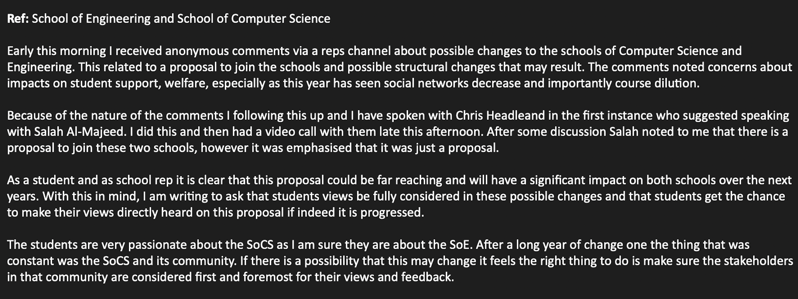
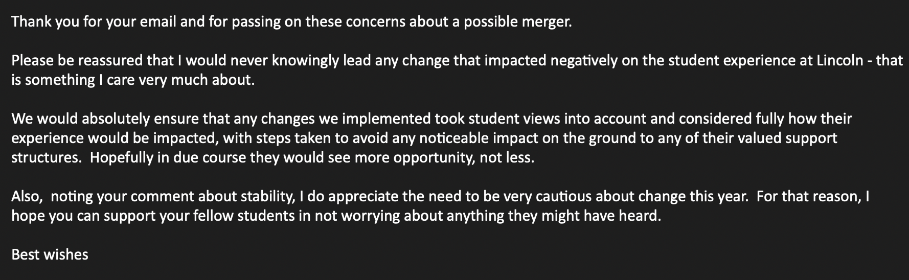

Yesterday I was contacted anonymously at 05:10AM about possible changes to the School and its structure. Specifically, this regarded the potential merging of our School of Computer Science with another school. Due to the nature of the message I immediately worked to clarify so that any rumours would be corrected.
As I worked through the day speaking to a range of people, it become clear that this message had some merit. By early in the early afternoon and after a video call with the acting Head of SoCS, Salah Al-Majeed and the Director of Teaching and Learning Chris Headleand, it was confirmed to me in writing that there is a proposal to merge the School of Computer Science and the School of Engineering.
I raise this issue to you as current students but more importantly custodians of SoCS which would no longer exist as an entity in itself. The school we take great privilege in attending is only as strong as its community and the great people who have come before it. That community includes staff, lecturers, researchers, alumni as well as us students. I am deeply concerned about the contents of this proposal and its justification as no information about it has been shared or released.
I am calling on the College of Science to make the proposal and justification for this proposal available to the school community and for the community to have the opportunity to share their opinions BEFORE any such proposal is approved. I also call on the CoS to make assurances for the following:
The above are not excessive. They are what one would expect at a minimum where the very first sentence about the university is that students are at the heart of everything we do.
To begin this conversation I have contacted the Head of the College of Science, Prof Libby John, as well as the Deputy Vice Chancellor for Student Development and Engagement for the University of Lincoln, Prof Liz Mossop, to seek assurances in the first instance. This communication and response is shown below:
Email raising concern:
Response to email:
It is clear we need more information. To this end and to provide an opportunity for members of the SoCS community to share their thoughts and ask about the future of SoCS I have arranged a 1 hour Question and Answer session with the Head of the School for the 4th May.
Unfortunately, this is over 6 weeks away and was the only time that was made available to me. I call on you to make it known if you wish this issue to be prioritised and this meeting moved forwards. In the mean time I will utilise every meeting at my disposal before then to gain updates and provide feedback to you all.
The School of Computer Science is one that we all know and love. Changes that have the potential to have such a large impact like a merger between two schools should be made transparent and community inclusive.
I ask that all members of the community to make your thoughts, comments and concerns known. Please do not be silent on this issue. If you want to do this anonymously the reps provide an anonymous feedback form that can be used. A link to this post will also be made in the SoCS Common Room on Teams that we all have access to where comments can also be made.
All question posed and any provided responses will be made through new clearly marked blog posts on this reps website. Announcements will be made to the community when this occurs.
Remember, we are here to help. If you are not having the experience you want then please reach out and let us know. You can contact any one of us through our email links or anonymously using our Feedback page. All emails are received in the strictest of confidence. No concern or idea is too small.